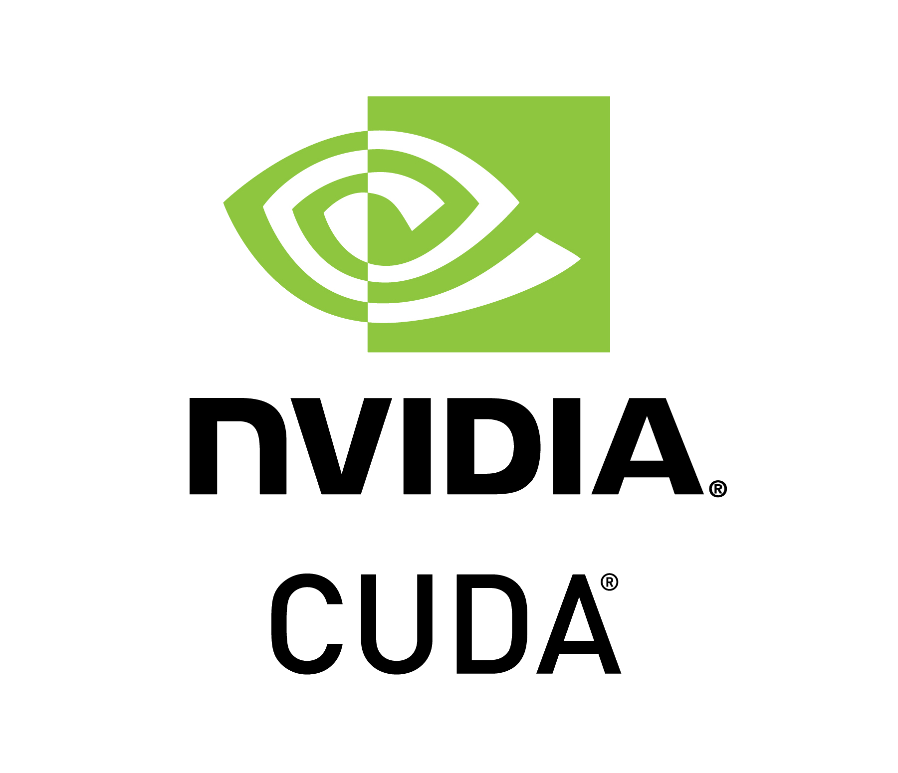

GITHUB
PROYECTOS
Distribuidora
Sistema web de distribucion de productos de primera necesidad.
View Project

Convolucion de imagenes PYCUDA
Concolucion de imagenes de el espacio RGB a GRAY con pycuda.
View Project
 Reconocimiento facial y deteccion de movimientos OpenCV and C++
Reconocimiento facial utilizando Har-Cascade con C++.
View Project
Reconocimiento facial y deteccion de movimientos OpenCV and C++
Reconocimiento facial utilizando Har-Cascade con C++.
View Project